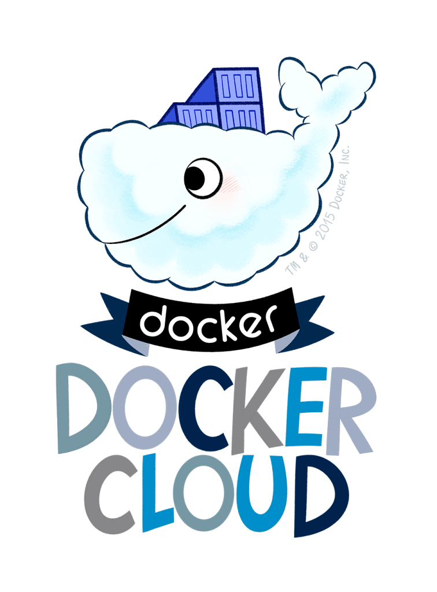
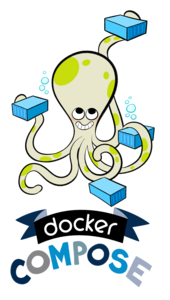
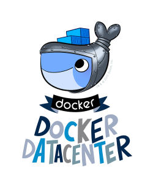
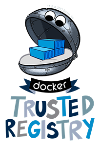
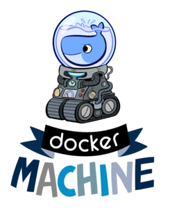
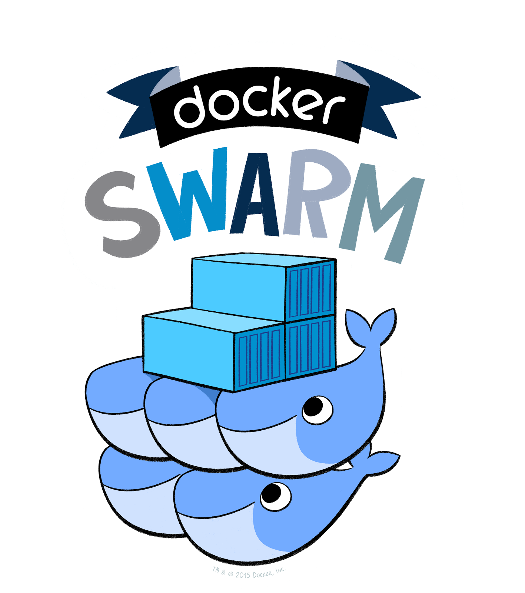
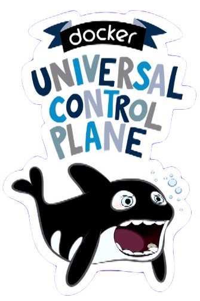

Introducing Docker
An intro module to get students on message with what docker is, and the priorities and concerns of distributed application dev and ops.
Hands up,
Who's ever been to dependency hell?
(Other circles of hell include scaling hell, deployment hell, and infrastructure hell)
- Ask a small class to tell stories to the group, or a large class to pair off and tell each other their stories
- then call a couple out for the room.
Dependency hell, infrastructure mismatches, and lack of scalability are all examples of problems with
Standardization and Encapsulation.
Luckily, this problem is not new.
- point out how the class's stories map to standardization and encapsulation problems;
- "dependency conflics are like fighting todlers; you have to encapsulate them in different rooms"
Devops circa 1912
- back in the day, shipping cargo was a big problem - here are some 19th century devops struggling to deploy their latest product.
- huge delays, breakage and theft were caused by the fact that loose cargo had to be packed and unpacked at ports for redistribution
Encapsulation eliminates friction across infrastructure, and standardization facilitates scale.
- the great innovation of shipping containerization was the repacking was no longer necessary, allowing cargo to move from ship to train to truck with far less friction.
- shipping wasn't the only example, either; standardization of replacable parts was a key methodological innovation that allowed the industrial revolution to scale so dramatically. The history of technology and business is rife with the same pattern...
The most basic thing Docker provides is a
framework for service encapsulation
But what are the implications of this for developers , ops , and orgs ?
- ...and Docker proposes to implement that pattern of encapsulation and standardization for the software development community, by packaging services with their minimal dependencies in a way that can be run anywhere: ship, train or truck, or aws, azure or on prem as the case may be, without collision between their contents or dependencies.
- All of which sounds nice - but what are the practical implications of this brave new modularized world? Given this technology, what would you actually do with it? What are the opportunities and challenges it presents?
- *lead the class in an open discussion for 10-15min on opportunities and challenges of service encapsulation. Highlight opportunities for monolith densification; microservice architecture; and removal of friction between ops and dev. Highlight challenges of process and node brokerage; orchestration; and management issues (security, registry, RBAC...)*
- *mention roll on / roll off shipping coming between break bulk and full containerization to lead them to monolith densification if necessary.*
- *discuss Conway's law if necessary, to lead students to how dev and ops can work more effectively together, particularly in a service-oriented org.*
Encapsulation supercharges:
Monolith Densification
Service-Based Architecture
Devops
But all three of these things are served by an added layer of abstraction that simplifies the coordination of encapsulated services. Distributed Application Architecture is that abstraction.
- In all these cases we've talked about, there's a common theme: encapsulation and standardization make it easy to spin up lots of these processes in lots of different contexts, by design - but this gets us into situations where we need to coordinate between all these processes at once, possibly in varying numbers, and possibly across varying numbers of machines.
- So, we want not only to encapsulate our processes, but abstract away the concept of individual processes while developing, and individual nodes while deploying.
Dockerized Distributed Application Architecture will help you develop for
Services, not processes
and deploy on
Networks, not nodes.
- The mental model that provides this abstraction is called distributed application architecture, and Docker provides the tools to make this paradigm simple to develop and deploy for.
- the first half of the docker way of doing things, is to federate encapsulated processes into a single service, and similary federate many nodes into a single swarm, and make these services and swarms the first-class conceptual objects with which you will interact.
Docker helps create a
virtuous circle between dev and ops
via service-oriented registry, RBAC, and control planes.
- the other half of the docker way of doing things is to use the portability of software containers to bring dev and ops closer together.
- in practise, if we're going to be moving so seamlessly between dev and ops, we need the right enterprise tooling to coordinate all these transactions, between containers but especially between humans.
Docker endeavors to:
Make containerization of services easy
Make service orchestration across processes and machines easy
Eliminate friction between development and deployment
Docker provides a suite of enterprise-grade tools that perform all of the above.







- All this business about encapsulation and standardization is what Docker does better than anyone else out there; we call this 'containerization'.
- As we also saw so far, containerization naturally leads to the need to coordinate containers, and even machines; we call this 'orchestration'.
- Finally, Docker also empowers developers and ops managers to work more closely together through the lifetime of a service, by removing barriers between dev and ops.
- Docker endeavors to provide the tooling to make containerization, orchestration, and frictionless deployment straightforward.